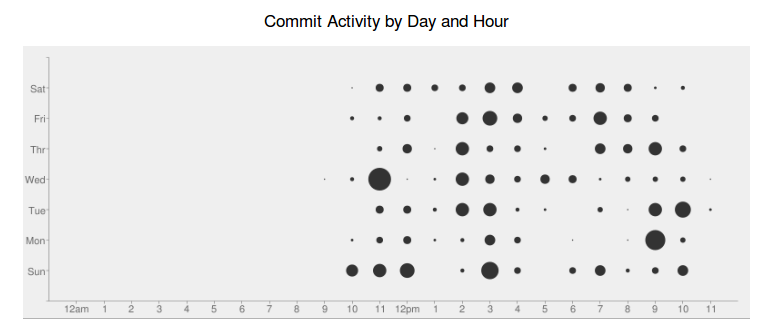

Welcome to Webzash !
Easy to use free and open source web based double entry accounting software written in PHP - MySQL

Benifits :
- Free and Open Source under MIT License
- No setup required
- Works on "Shared Hosting" environment
- Community driven
- PHP 5+ Supported
- MySQL and Postgres SQL Server Supported
Features :
- Chart of Accounts (Groups and Ledgers)
- Dynamic Entry Types (Receipt, Payment, Contra, Journal, etc)
- Ledger account reconciliation
- Tag entries
- Reports include Balance Sheet, Profit and Loss Statement, Trial Balance and Ledger Statement, Reconciliation Report, etc
- Download Reports in CSV / XLS format
- User authentication and roles
- User action logs
- Full support for MySQL database transactions to maintain data integrity
- Support for multiple accounts
Version 2.9 Available
Submitted by admin on 15 July 2020 - 05:13pmWebzash version 2.9 is now available for download.
Version 2.8 Available
Submitted by admin on 15 January 2019 - 12:33amWebzash version 2.8 is now available for download.
Version 2.7 Available
Submitted by admin on 30 July 2017 - 1:32amWebzash version 2.7 is now available for download.
Webzash in Docker and nginx
Submitted by admin on 29 March 2016 - 1:42amGood article on running webzash in docker and nginx
https://www.burgundywall.com/post/webzash-in-docker-and-nginx
Version 2.6 Available
Submitted by admin on 25 September 2015 - 3:39amWebzash version 2.6 is now available for download.
Version 2.5 Available
Submitted by admin on 8 August 2015 - 6:39amWebzash version 2.5 is now available for download.
CHANGELOG :
- Add experimental support for Postgres SQL Database
Version 2.4 Available
Submitted by admin on 7 August 2015 - 8:54amWebzash version 2.4 is now available for download.
CHANGELOG :
- Add custom decimal places
- Add currency format option
- Add account code to group and ledger accounts
It supports automatic updating from previous version of webzash.
Version 2.3 Available
Submitted by admin on 25 January 2015 - 3:22amWebzash version 2.3 is now available for download.
CHANGELOG :
- Support third party login (Joomla)
- Support hotkeys
- Use select2 for selecting ledgers in entires and reports
- Fix pagination bug
If you want to update from previous 2.x version read this guide.
Version 2.2 Available
Submitted by admin on 19 December 2014 - 2:48amWebzash version 2.2 is now available for download.
CHANGELOG :
- Show ledgers and groups in tree format
- Add support for printing and downloading xml reports
- Swap assets and liabilities sides in balance sheet
- Load the application as root url
- Add system information page
Version 2.1 Available
Submitted by admin on 13 December 2014 - 9:52amWebzash version 2.1 is now available for download.
Version 2.0 Available
Submitted by admin on 10 December 2014 - 8:26amWebzash version 2.0 is now available for download.
- Switched to CakePHP
- Switched to sqlite3 for master data
- Add notes to ledger account
- Use database reference keys and trigger to maintain data integrity
- All primary id are bigint(64) from int(32)
- Add date range to all reports
- Support large numbers upto 23 places
Version 1.7 Available
Submitted by admin on 21 December 2012 - 11:16amSwitched to Apache License, Version 2.0 !
Version 1.6 Available
Submitted by admin on 11 February 2012 - 4:03amFixed some bugs
Version 1.5 Available
Submitted by admin on 25 December 2011 - 8:41amMajor change in this release is renaming voucher to entry. This was the most sort after change and it required a lot of changes in the code and database. Also included is a automatic update script to make this easy.
Also Merry Christmas !
Version 1.4 Available
Submitted by admin on 31 October 2011 - 8:59amAfter a long time we are pleased to announce Webzash Version 1.4 !
Version 1.3 Available
Submitted by admin on 21 May 2011 - 8:05amWe are pleased to announce Webzash Version 1.3 !
Go grab it from the download page...
Upcoming major changes to Webzash
Submitted by admin on 6 April 2011 - 8:52amWe have lots of changes for the next version of Webzash.
To summarize the major changes that we are working on :
- Renamed "Voucher" to "Entry". This was the biggest complain that I had received from users. It has been fixed in the most recent git tree of Webzash.
- Added support for basic "Inventory"
Webzash Development
Submitted by admin on 14 February 2011 - 10:42am
Sweet !
Version 1.2 Available
Submitted by admin on 2 February 2011 - 8:00amWe are pleased to announce Webzash Version 1.2 !
Major features include :
- Dynamic Voucher Types
- Added support for empty voucher numbers
Special Thanks to H Maeda again for his support on dynamic voucher types :)
Version 1.1 Available
Submitted by admin on 28 January 2011 - 2:59amWe are pleased to announce Webzash Version 1.1 !
Major features include :
- Lots of bug fixes and usability improvements
- Added Application shortcuts
Special thanks to Brian and H. Maeda for this release.
User Interface Designers
Submitted by admin on 22 January 2011 - 10:09amWe need help of User Interface Designer for cleaning up the user interface and making it more user friendly. If you are a UX Designer and have some spare time, please do let us know.
Version 1.0 Available
Submitted by admin on 22 January 2011 - 7:27amWe are pleased to announce the Webzash Version 1.0 !
Webzash moves out of beta and is now stable for everyday use. Also planning for next version of Webzash has started. One of the major feature targeted for next version of Webzash is stocks. Those who are interested in helping us with planning and development of next version of Webzash please contact us through the feedback form.
Released Version 1.0-beta3
Submitted by admin on 19 January 2011 - 5:06amWebzash Version 1.0-beta3 release !
Major features include :
- Ledger A/C Reconciliation
Screenshot :
Released Version 1.0-beta2
Submitted by admin on 12 January 2011 - 7:03amWebzash Version 1.0-beta2 release !
Major features include :
- User authentication
- Role based permissions
- Voucher auto numbering
- Ability to Lock a account and make it read only
- Updated all SQL queries with active record queries (will allow support for multiple database backed eg: sqlite, postgres, oracle, etc)
- Removed support for Draft vouchers
- Help and FAQ section
- Tooltips
Changes for Version 1.0-beta2
Submitted by admin on 9 January 2011 - 7:28amMajor changes for the upcoming version 1.0-beta2
- Removed support for draft vouchers
- User authentication and role based permissions
- Voucher auto numbering
Installing Webash
Submitted by admin on 2 January 2011 - 3:23amFor installing Webzash you need to make sure that the Apache mod_rewrite is enabled otherwise you will get a "Internal Server Error". Another way is to delete the .htaccess file in the root folder of your webzash setup.
Below are instructions to enable mod_rewrite :
Released Version 1.0-beta1
Submitted by admin on 1 January 2011 - 1:51amWebzash Version 1.0-beta1 release !
Features Include :
- Account Groups
- Account Ledgers
- Vouchers (Receipt, Payment, Journal, Contra)
- Draft Vouchers
- Tag Vouchers
- Reports (Balance sheet, Profit and Loss, Trial balance, Ledger Statement)
- Account Backup
- Account Carry Forward to Next Year